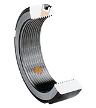

滾珠螺桿系列
轉造級滾珠螺桿
滾珠螺桿庫存區
線性滑軌系列
KM
線性模組系列
滾珠螺桿支撐座
高荷重螺桿支撐座
馬達傳動座
聯軸器
精密鎖定螺帽
利茗減速機
直線軸承
LMC
單軸心式滑軌
LGD
雙軸心式滑軌
精密鎖定螺帽(鎖固螺帽), 防鬆螺帽
Precision Locknuts for Bearings
下載 防鬆螺帽 規格表

MODEL
:
YSF
牙腹鎖定
Flank Locking
牙腹鎖定防鬆螺帽
鎖定方式，為螺紋半角 30°角，三點式鎖定。
此型號為標準產品，其優異的鎖定設計，能使固定銅上之螺紋，完全契合於公螺紋上，使其防鬆效果完美無缺更因為其 30°角的設計，減少了因為鎖緊螺絲因而產生的力距。( 此力距如果超過軸向負荷 )
材質 :
SCM440(42CrMo4)
硬度 :
HRC28°~32°
螺紋精度 :
ISO 4H
精密研磨
平面偏擺 :
0.002mm
螺紋精度 :
ISO 6H
精密車削
平面偏擺 :
0.005mm
MODEL
:
YSA
軸向鎖定
Axial Locking
軸向鎖定防鬆螺帽
鎖定方式為軸向三點式鎖定，其厚度與 YSF 系列相同。
軸向三點式鎖定為其特點，適用於裝配工作的特殊環境限制。
材質 :
SCM440(42CrMo4)
硬度 :
HRC28°~32°
螺紋精度 :
ISO 4H
精密研磨
平面偏擺 :
0.002mm
螺紋精度 :
ISO 6H
精密車削
平面偏擺 :
0.005mm
MODEL
:
YSR
徑向鎖定
Radial Locking
徑向鎖定防鬆螺帽
鎖定方式為徑向三點式鎖定，其厚度相較其他產品為薄，
適用於螺帽厚度空間受到限制，無法使用其它產品之情況。
材質 :
SCM440(42CrMo4)
硬度 :
HRC28°~32°
螺紋精度 :
ISO 4H
精密研磨
平面偏擺 :
0.002mm
螺紋精度 :
ISO 6H
精密車削
平面偏擺 :
0.005mm
MODEL
:
YSK
縮緊鎖定
Clasp Locking
縮緊鎖定防鬆螺帽
鎖定方式為利用鋼材本身的彈性，以軸向鎖固，強制鎖定。
此型號特別針對工作環境惡劣、螺帽易於鬆脫的場合，其鎖定能力為傳統螺帽 3 倍以上，為其特異優點。
YSK 設計的鎖定方式，因為裝配上的誤差，故無法確保平面與螺紋的垂直偏擺為其缺點。
材質 :
SCM440(42CrMo4)
硬度 :
HRC28°~32°
螺紋精度 :
ISO 6H
精密車削
平面偏擺 :
0.007mm
MODEL
:
YSFR
牙腹鎖定
YSFR Precision Locknut
牙腹鎖定防鬆螺帽
YSFR
型螺帽，同時配置三個牙腹鎖定螺絲和三個徑向鎖定螺絲，
能夠滿足大尺寸軸心須要考慮的鎖定方式和扭緊力矩。
材質 :
SCM440(42CrMo4)
硬度 :
HRC28°~32°
螺紋精度 :
ISO 4H
精密車削
平面偏擺 :
0.008mm
防鬆螺帽(鎖定螺帽)之鎖定方式為利用鋼材本身的彈性，
以軸向鎖固，強制鎖定。
特別針對工作環境惡劣、螺帽易於鬆脫的場合，
其鎖定能力為傳統螺帽三倍以上之優點。
Download
下載 防鬆螺帽 規格表
下載 防鬆螺帽 CAD 檔案
返回首頁
|
產品介紹
|
滾珠螺桿
|
線性滑軌
|
線性模組
|
聯軸器
|
檔案下載
|
聯絡我們
Copyright
© 2018
HONG YI PRECISION CO.,LTD.
鴻翊精密股份有限公司
TEL: 04-2426 5828 FAX: 04-2425 9082
台中市北屯區環中路一段1702-3號